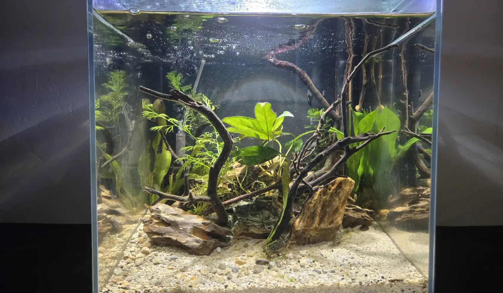
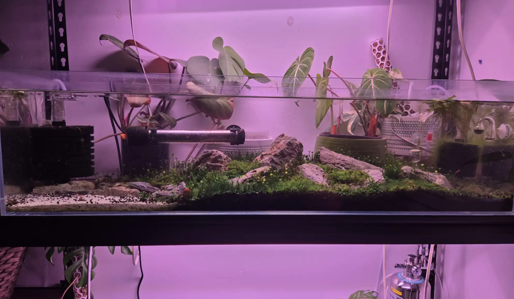
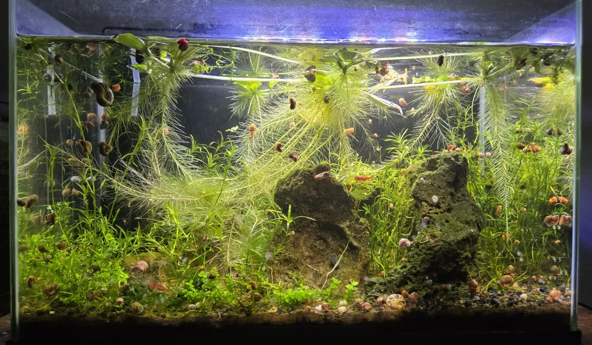
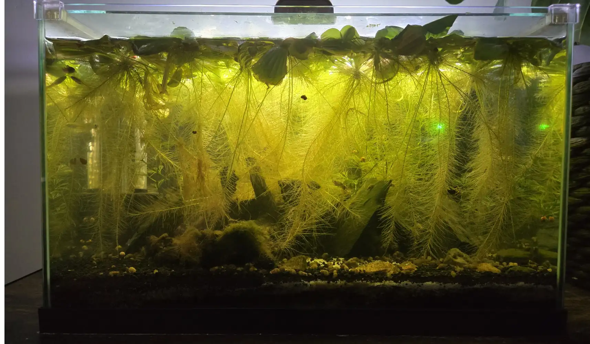

My Fish Tanks
10 Gallon Cube Tank
This is my newest tank. It is a 10 Gallon Cube tank with a canister filter and a sponge filter for filtration and oxygenation. There are 6 Ember tetras 5 Corydoras and 4 Blue Badis.
More Info14 Gallon Tank
This is a 14 Gallon long tank with a sponge filter for filtration and oxygenation. This is an Iwagumi style tank with a carpeting of dwarf baby tears, monte carlo, and dwarf underwater clover.
More Info5.5 Gallon Tank
This is a 5.5 Gallon fish tank with a sponge filter for filtration and oxygenation. This is one of my oldest tanks and has a colony of neocaridna shrimp and a school of 6 Celestial Pearl Danios.
More Info10 Gallon Tank
This fish tank is my original fish tank it is 10 gallons and has a spong filter for filtration and oxygenation. This tank is in need of a rescape and I am planning on rescaping it in the next few weeks.
More Info2.5 Gallon Tank
This 2.5 Gallon tank is just a plant holding tank so it is very dirty and I plan on cultivating a colony of daphnia and scuds for live food for my other tanks at some point but it definity is not pretty.
More Info